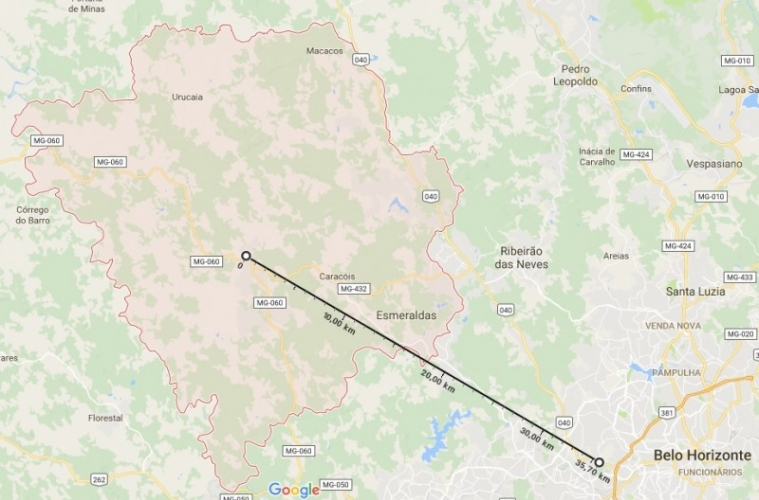

Destaques
Cronograma de vacinação anti-rábica
A raiva é uma doença infecciosa aguda causada por um vírus que acomete mamíferos, inclusive o ser humano, e é transmitida principalmente por meio da mordida de animais infectados. Para controlar o problema, o poder público realiza, anualmente, uma campanha de vacinação antirrábica em todo o país, que permite que os tutores imunizem seus animais gratuitamente.

Economia
A Secretaria Municipal de Desenvolvimento Econômico tem como atribuição, promover e incentivar o desenvolvimento da indústria, comércio, serviços e turismo, visando à atração e o fomento de investimentos, planejamento e coordenação de ações, além de suporte técnico setorial ao Gabinete do Prefeito. A Secretaria visa fomentar o desenvolvimento econômico local de maneira sustentável. (apoio e desenvolvimento de políticas federais estaduais e municipais para geração de emprego e renda, fomento ao empreendedorismo, aplicação da Lei Geral das micro e pequenas empresas, trabalho no poder de compras do município, desburocratização, fomento do turismo como alavanca do desenvolvimento econômico local) Captação de investimentos produtivos através de uma prospecção de investimentos, trabalhos na lei de incentivos fiscais e estímulos econômicos do município, acompanhamento do plano diretor da cidade em prol da captação de investimentos produtivos
Politica
O Chefe de Gabinete do Prefeito exerce uma função de extrema importância, pois ele é o elo entre o Prefeito, a comunidade e os demais segmentos da sociedade. Cabe ao Chefe de Gabinete promover o intercâmbio do Prefeito com as secretarias municipais, associações de classe, entidades públicas e privadas e órgãos das esferas estadual e federal. O atendimento ao público é outro importante canal de comunicação criado para que o Chefe do Executivo possa ouvir a população. O objetivo é manter um contato direto com os moradores para saber quais são os anseios da população e, ao mesmo tempo, fazer com que os moradores tenham uma participação mais efetiva no governo. O Chefe de Gabinete também é responsável por expedir correspondências, organizar agendas e audiências do prefeito e preparar e encaminhar o expediente a ser despachado pelo Chefe do Executivo. Outra atribuição é redigir, registrar e expedir os atos do Prefeito com a Procuradoria e organizar e manter sob sua responsabilidade os originais de lei, decretos, portarias e demais atos normativos praticados pelo Executivo Municipal.
Curiosidades
Os habitantes se chamam esmeraldenses. O município se estende por 911,4 km² e contava com 60 153 habitantes no último censo. A densidade demográfica é de 66 habitantes por km² no território do município. Situado a 754 metros de altitude. De Esmeraldas tem as seguintes coordenadas geográficas: Latitude: 19° 45' 46'' Sul, Longitude: 44° 18' 47'' Oeste. Apesar de bem próxima da capital - apenas 60 quilômetros separam Esmeraldas e Belo Horizonte - a cidade preserva características típicas do interior. Por conta das comunidades rurais no entorno, as cachoeiras, as fazendas coloniais e hotéis-fazenda são grandes atrativos, assim como os haras e as criações de ovelhas. Associação dos Agricultores oferece delícias como pão de queijo assado em folha de bananeira No Centro, a atração é o casario preservado. Entre os prédios mais interessantes está o da Prefeitura, que ocupa uma antiga fábrica de tecidos. Construída nas décadas de 20 a 30, tem estilo art deco. Já a Igreja de Santa Quitéria, padroeira de Esmeraldas, exibe arquitetura modernista. Em maio, o santuário é cenário de festejos por conta da Festa da Padroeira. Mas quando chega dezembro, quem chama a atenção são os grupos de Folia de Reis. Durante 12 dias - entre o Natal e o dia 06 de janeiro -, a folia bate à porta dos moradores com os palhaços do reisado e seus instrumentos de percussão. A manifestação popular comemora o nascimento de Cristo. Em qualquer época do ano, porém, a dica é visitar a Associação dos Agricultores Familiares e da Agroindústria de Esmeraldas, que fabrica e vende delícias como pão de queijo assado em folha de bananeira, compotas, defumados e cachaça, na Praça Getúlio Vargas. E a Feira de Artesanato, dentro do Mercado Municipal, que reúne bordados e artesanato, além das comidas típicas.